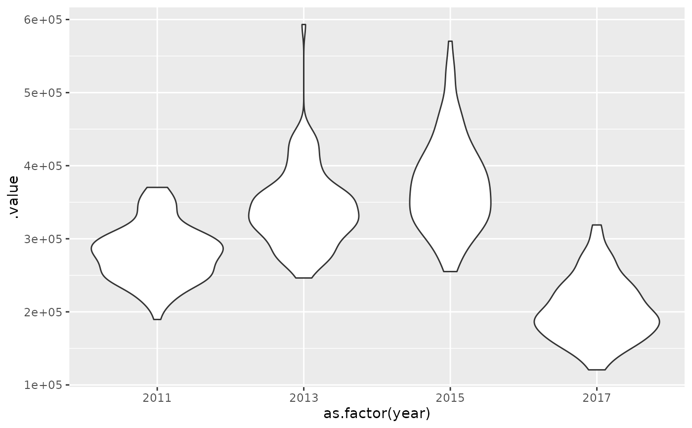

Calculate a population index via simulation from the joint precision matrix
Source:R/get-index-sims.R
get_index_sims.Rd![[Experimental]](figures/lifecycle-experimental.svg)
Calculate a population index via simulation from the joint precision matrix.
Compared to get_index(), this version can be faster if bias correction was
turned on in get_index() while being approximately equivalent. This is an
experimental function. This function usually works reasonably well, but we
make no guarantees. It is recommended to use get_index() with bias_correct = TRUE for final inference.
Arguments
- obj
predict.sdmTMB()output withnsim > 0.- level
The confidence level.
- return_sims
Logical. Return simulation draws? The default (
FALSE) is a quantile summary of those simulation draws.- area
A vector of grid cell/polyon areas for each year-grid cell (row of data) in
obj. Adjust this if cells are not of unit area or not all the same area (e.g., some cells are partially over land/water). Note that the area vector is added aslog(area)to the raw values inobj. In other words, the function assumes a log link, which typically makes sense.- est_function
Function to summarize the estimate (the expected value).
mean()would be an alternative tomedian().- area_function
Function to apply area weighting. Assuming a log link, the
function(x, area) x + log(area)default makes sense. If in natural space,function(x, area) x * areamakes sense.- agg_function
Function to aggregate samples within each time slice. Assuming a log link, the
function(x) sum(exp(x))default makes sense. If in natural space,function(x) sum(x)makes sense.
Value
A data frame. If return_sims = FALSE:
name of column (e.g.
year) that was supplied tosdmTMB()time argumentest: estimatelwr: lower confidence interval valueupr: upper confidence interval valuelog_est: log estimatese: standard error on the log estimate
If return_sims = TRUE, samples from the index values in a long-format data frame:
name of column (e.g.
year) that was supplied tosdmTMB()time argument.value: sample value.iteration: sample number
Details
Can also be used to produce an index from a model fit with tmbstan.
This function does nothing more than summarize and reshape the matrix of simulation draws into a data frame.
Examples
# \donttest{
m <- sdmTMB(density ~ 0 + as.factor(year),
data = pcod_2011, mesh = pcod_mesh_2011, family = tweedie(link = "log"),
time = "year"
)
qcs_grid_2011 <- replicate_df(qcs_grid, "year", unique(pcod_2011$year))
p <- predict(m, newdata = qcs_grid_2011, nsim = 100)
x <- get_index_sims(p)
#> We generally recommend using `get_index(..., bias_correct = TRUE)`
#> rather than `get_index_sims()`.
x_sims <- get_index_sims(p, return_sims = TRUE)
#> We generally recommend using `get_index(..., bias_correct = TRUE)`
#> rather than `get_index_sims()`.
if (require("ggplot2", quietly = TRUE)) {
ggplot(x, aes(year, est, ymin = lwr, ymax = upr)) +
geom_line() +
geom_ribbon(alpha = 0.4)
ggplot(x_sims, aes(as.factor(year), .value)) +
geom_violin()
}

# Demo custom functions if working in natural space:
ind <- get_index_sims(
exp(p),
agg_function = function(x) sum(x),
area_function = function(x, area) x * area
)
#> We generally recommend using `get_index(..., bias_correct = TRUE)`
#> rather than `get_index_sims()`.
# }